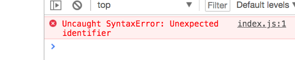

用 Webpack 进行项目构建
前面我们用了一个 JS 库，叫 axios ，但是是通过 script 标签的形式导入的。但是其实 axios 最专业方式是通过 import ，作为 ES6 模块来导入。本小节，来聊聊 ES6 模块的打包。
什么是 ES6 模块？
myModule.js
const myString = 'Hello'
export default myString
这里一个模块，就是指一个文件，文件内部的所有变量，对其他文件是不可用的。一个 ES6 模块，就是一个用 ES6 语法进行了导出的 JS 代码文件。只有被导出的变量，才可以被其他文件导入后使用。
这里，我们定义了一个变量叫 myString 。然后对他进行了 默认导出 （ ES6 还有另外一种导出方式，叫做命名导出，但是具体到打包步骤，都是一样的，所以本文档中，我们都采用默认导出的方式来讲解）。
index.js
import myString from './myModule'
console.log(myString)
这样，在另外一个文件中，就可以进行导入 （ import 就是导入的意思）。然后使用了。但是有一个很大的问题就是 import 是 ES6 的语法，浏览器是不支持的。
index.html
<html>
<head>
<script src="./index.js" />上面的代码，完全符合 ES6 的规范，但是浏览器中打开 index.html ，会出现报错

报错：未能捕捉到的语法错误：不能识别的标识符。
很明显，这里指的是 import 这样的语法，浏览器是不认的。
传统上，一个大项目拆分成多个文件，都是通过 script 标签的形式直接导入到 index.html 。但是这种方式，目前已经过时。所有的正规项目都是用 ES6 模块的方式来导入的。但是如何解决浏览器不支持 ES6 模块的问题呢？
Webpack 打包 ES6 模块
使用 Webpack 可以把多个 ES6 打包成一个 JS 文件，这样浏览器就可以直接执行了。
npm init -y
运行命令，生成一个 package.json 文件。方便后续安装 npm 包。
npm i -D webpack webpack-cli
然后，就可以安装 webpack 了。 Webpack 是一个 JS 模块打包器。可以把 ES6 或者 commonjs 格式的模块都打包成一个文件。但是实际上，除了打包，Webpack 还能干几千件事情，而且很难归类，总体上这些事情都跟项目的 构建 （ build ）有关，所以， Webapck 被叫做一个 构建工具 更为合适。但是本文中，我们就先用一下它打包 ES6 模块的能力。
webpack.config.js
const path = require('path')
module.exports = {
entry: './src/index.js',
output: {
path: path.resolve(__dirname, 'dist'),
filename: 'bundle.js'
}
}
Webpack 这个工具一旦运行，就会自动加载 webpack.config.js 中的内容，并且按照里面的内容，对项目进行各种构建操作。稍微解释一下上面的语法：
require 是导入 commonjs 模块的方式。这里导入了 path 也就是路径处理的功能。
module.exports 是 commonjs 模块格式，导出一个模块的语句。相当于 ES6 模块下使用 export default 。
entry 是输入文件，这里指定的是 src 文件夹下的 index.js ，这个是整个程序的入口，里面会 import 其他 js 模块。
output 用来指定输出文件的位置，__dirname 代码当前文件夹。这里指定的位置是 dist/bundle.js 。
package.json
"scripts": {
"build": "webpack"
},
到 package.json 文件中，添加一个 npm 脚本 ，脚本名叫 build ，执行这个脚本，实际运行的命令是 webpack 。虽然我们系统上没有 webpack 命令，但是已经在项目内安装了 webpack ，所以是可以在 package.json 中直接使用的。
npm run build
命令行中，执行 build 这个脚本，就要用 npm run build 这样的命令。这样实际底层，执行的就是 webpack 命令。会看到这样的报错：
ERROR in Entry module not found: Error:
Can't resolve './src/index.js' in
'/Users/peter/Desktop/es6-module-demo'
错误：入口模块未找到。找不到 ./src/index.js。
解决方法就是把 js 文件都移动到 src 文件夹下。再次运行 npm run build 会看到一个警告
WARNING in configurationThe 'mode' option has not been set
配置文件中，缺少 mode 设置
webpack.config.js
mode: 'development'
这样，编译输出的内容会存储到 dist/bundle.js 文件中。
index.html
<script src="./dist/bundle.js" />
到 index.html 改一下路径，指向 bundle.js 。把原来导入 index.js 的那一行删掉。然后浏览器中打开，就可以在终端中看到运行效果了。 bundle.js 中的内容，其实就是 index.js 和 myModule.js 内容之和。或者说 bundle.js 是源文件( src/ 中的文件) 的编译输出。也可以说，src/ 下的所有内容，都被打包成了一个 bundle.js 文件。在当代 Web 开发的环境下，手写的源代码，几乎一定不会被浏览器之间运行，而是把编译输出去交给浏览器运行。